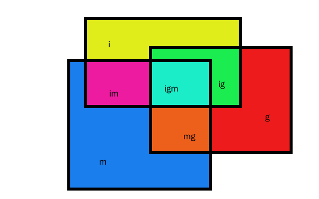
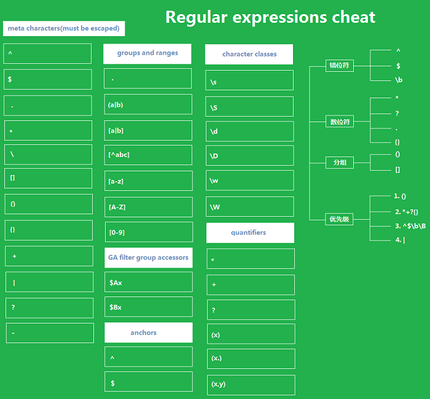

exec 返回值属性为对象。
var reg = /k/,
str = 'kahn1990';
console.log(typeof reg.exec(str));
==> 'object'
其中共包含大约 (n+1) 个属性：index、input、数组。第三个属性为数组中的元素，匹配到一个则为 0，匹配到 n 个则为 (n-1)。
var reg = /k/,
str = 'kahn1990';
for( var key in reg.exec(str)){
console.log('reg.exec(str)属性：'+key+'，其值为'+reg.exec(str)[key]+'；')
}
==> reg.exec(str)属性：index，其值为0；
==> reg.exec(str)属性：input，其值为kahn1990；
==> reg.exec(str)属性：0，其值为k；
==> undefined
在 exec 中设置 g 修饰符会更新正则表达式的 lastIndex 属性，表示本次匹配之后，下次匹配的索引从 lastIndex 开始。
var reg = /k/,
str = 'kahn1990';
console.log(reg.exec(str).index);
==> 0
console.log(reg.exec(str).index);
==> 0
var reg = /k/g,
str = 'kahn1990';
console.log(reg.exec(str).index);
==> 0
console.log(reg.exec(str).index);
==> 1
类似 exec，并同样具有 index 和 input 属性。
var reg = /k/,
str = 'kahn1990';
console.log(typeof str.match(reg));
==> 'object'
match 方法中 g 修饰符作用在完成匹配之后会继续匹配所有字符串直至结束，并且失去 index 和 input 属性。
replace 用于替换匹配到的字符串。
var reg = /k/,
str = 'kahn1990';
console.log(str.replace(reg, 'j');
==> 'jahn1990'
replace 方法中设置 g 修饰符之后会替换所有匹配的字符串。
var reg = /9/,
str = 'kahn1990';
console.log(str.replace(reg, '88');
==> 'kahn1880'
replace 函数中使用 $ 引用子正则表达式匹配内容。
var reg = /（\w+)-(\w+)/,
str = 'kahn1990-kangjian';
console.log(str.replace(reg, '$2-$2');
==> 'kangjian-kangjian'
在 replace 函数中 $ 符号有特殊含义，如果需要特意替换为 $ 符号需要使用 $$ 进行匹配。
search 返回正则表达式第一次匹配的位置。
var reg = /1/,
str = 'kahn1990';
console.log(str.search(reg);
==> 4
split 返回正则表达式第一次匹配的位置。
var reg = /\W/,
str = 'kahn1990-kangjian';
console.log(str.split(reg));
==> ["kahn1990", "kangjian"]
test 检查 str 是否匹配成功，返回值为布尔类型。
var reg = /k/,
str = 'kahn1990';
console.log(typeof reg.test(str));
==> true
对于RegExp对象，我在自己制作的html静态文件生成工具[1]上恰好有使用。
var content='this is ^footnote,^footnote:here!',
reg = new RegExp("\\^+[a-zA-Z0-9_\u4e00-\u9fa5]+(?!:)", "igm");
console.log(content.match(reg,'g'));
==> ["^footnote"]
flag 参数由 "i"、"g"、"m"组合而成：

如上面我使用的new RegExp("\\[\\^+[a-zA-Z0-9_\u4e00-\u9fa5]+\\](?!:)", "igm")就是igm三项组合在一起。
| 模式匹配符 | 说明 |
|---|---|
| i | ignorCase忽略大小写（不区分大小写） |
| m | mutiple允许多行匹配（搜索复数行） |
| g | globle进行全局匹配，指匹配到目标串的结尾（全文匹配） |
除此之外还有另一种写法：
| 模式匹配符 | 说明 |
|---|---|
| new RegExp(patern[, flag]).ignorCase | 返回有没有指定 i选项 的布尔值 |
| new RegExp(patern[, flag]).source | 返回有没有指定 g选项 的布尔值 |
| new RegExp(patern[, flag]).global | 返回正则表达式部分的字符串 |
var reg = new RegExp("\\[\\^+[a-zA-Z0-9_\u4e00-\u9fa5]+\\](?!:)", "igm");
console.log(reg.ignoreCase);
==> true
console.log(reg.global);
==> true
console.log(reg.source);
==> \[\^+[a-zA-Z0-9_一-龥]+\](?!:)
RegExp.$ 的形式与意义如下。
| 形式 | 意义 |
|---|---|
| RegExp.$n | 第 n 个括号里的字符串。详细内容见后文。 |
| RegExp.$& | 等同于 RegExp.lastMatch 。 |
| RegExp.$` | 等同于 RegExp.leftContext 。 |
| RegExp.$" | 等同于 RegExp.rightContext 。 |
| RegExp.$+ | 等同于 RegExp.lastParen 。 |
| RegExp.$_ | 等同于 RegExp.input 。 |
| RegExp.$* | 等同于 RegExp.multiline 。 |

正则表达式可以用下面的形式来进行匹配。
| 正则表达式 | 意义 |
|---|---|
| A | 字符A |
| ABC | 字符串ABC |
| [ABC] | A、B、C其中一个字符 |
| [A-C] | 从A到C的其中一个字符 |
| [^ABC] | 不是A、B、C的任意一个字符 |
| . | 任意一个字符 |
| A | 匹配前面的子表达式零次或多次。例如，"AP" 能匹配 "A" 以及 "APP"。 * 等价于{0,}。 |
| A+ | 匹配前面的子表达式一次或多次。例如，"AP+" 能匹配 "AP" 以及 "APP"，但不能匹配 "A"。+ 等价于 {1,}。 |
| A? | 匹配前面的子表达式零次或一次。例如，"do(es)?" 可以匹配 "do" 或 "does" 中的"do" 。? 等价于 {0,1}。 |
| ^A | 以A开始的字符串 |
| A$ | 以A结束的字符串 |
| ABC|DEF|GHI | ABC或DEF或GHI |
| A{2} | 2个A（AA） |
| A{2,} | 2个以上A（AA、AAA、AAAA、...） |
| A{2,3} | 2个～3个A（AA、AAA） |
| ^ | 匹配输入字符串的开始位置。如果设置了RegExp对象的Multiline属性，^也匹配“\n”或“\r”之后的位置 |
| $ | 匹配输入字符串的结束位置。如果设置了RegExp对象的Multiline属性，$也匹配“\n”或“\r”之前的位置 |
| * | 匹配前面的子表达式零次或多次。例如，zo能匹配“z”以及“zoo”。等价于{0,} |
| + | 匹配前面的子表达式一次或多次。例如，“zo+”能匹配“zo”以及“zoo”，但不能匹配“z”。+等价于{1,} |
| ? | 匹配前面的子表达式零次或一次。例如，“do(es)?”可以匹配“do”或“does”中的“do”。?等价于{0,1} |
| {n} | n是一个非负整数。匹配确定的n次。例如，“o{2}”不能匹配“Bob”中的“o”，但是能匹配“food”中的两个o |
| {n,} | n是一个非负整数。至少匹配n次。例如，“o{2,}”不能匹配“Bob”中的“o”，但能匹配“foooood”中的所有o。“o{1,}”等价于“o+”。“o{0,}”则等价于“o*” |
| {n,m} | m和n均为非负整数，其中n<=m。最少匹配n次且最多匹配m次。例如，“o{1,3}”将匹配“fooooood”中的前三个o。“o{0,1}”等价于“o?”。请注意在逗号和两个数之间不能有空格 |
| ? | 当该字符紧跟在任何一个其他限制符（*,+,?，{n}，{n,}，{n,m}）后面时，匹配模式是非贪婪的。非贪婪模式尽可能少的匹配所搜索的字符串，而默认的贪婪模式则尽可能多的匹配所搜索的字符串。例如，对于字符串“oooo”，“o+?”将匹配单个“o”，而“o+”将匹配所有“o” |
| . | 匹配除“\n”之外的任何单个字符。要匹配包括“\n”在内的任何字符，请使用像“[.\n]”的模式 |
| (pattern) | 匹配pattern并获取这一匹配。所获取的匹配可以从产生的Matches集合得到，在VBScript中使用SubMatches集合，在JScript中则使用$0…$9属性。要匹配圆括号字符，请使用“(”或“)” |
| (?:pattern) | 匹配pattern但不获取匹配结果，也就是说这是一个非获取匹配，不进行存储供以后使用。这在使用或字符“(|)”来组合一个模式的各个部分是很有用。例如“industr(?:y|ies)”就是一个比“industry|industries”更简略的表达式 |
| (?=pattern) | 正向预查，在任何匹配pattern的字符串开始处匹配查找字符串。这是一个非获取匹配，也就是说，该匹配不需要获取供以后使用。例如，“Windows(?=95|98|NT|2000)”能匹配“Windows2000”中的“Windows”，但不能匹配“Windows3.1”中的“Windows”。预查不消耗字符，也就是说，在一个匹配发生后，在最后一次匹配之后立即开始下一次匹配的搜索，而不是从包含预查的字符之后开始 |
| (?!pattern) | 负向预查，在任何不匹配pattern的字符串开始处匹配查找字符串。这是一个非获取匹配，也就是说，该匹配不需要获取供以后使用。例如“Windows(?!95|98|NT|2000)”能匹配“Windows3.1”中的“Windows”，但不能匹配“Windows2000”中的“Windows”。预查不消耗字符，也就是说，在一个匹配发生后，在最后一次匹配之后立即开始下一次匹配的搜索，而不是从包含预查的字符之后开始 |
| x|y | 匹配x或y。例如，“z|food”能匹配“z”或“food”。“(z|f)ood”则匹配“zood”或“food” |
| [xyz] | 字符集合。匹配所包含的任意一个字符。例如，“[abc]”可以匹配“plain”中的“a” |
| [^xyz] | 负值字符集合。匹配未包含的任意字符。例如，“[^abc]”可以匹配“plain”中的“p”。 |
| [a-z] | 字符范围。匹配指定范围内的任意字符。例如，“[a-z]”可以匹配“a”到“z”范围内的任意小写字母字符。 |
| [^a-z] | 负值字符范围。匹配任何不在指定范围内的任意字符。例如，“[^a-z]”可以匹配任何不在“a”到“z”范围内的任意字符。 |
| \ | 将下一个字符标记为一个特殊字符、或一个原义字符、或一个向后引用、或一个八进制转义符 |
| \b | 匹配单词的边界，也就是指单词和空格间的位置 |
| \B | 匹配非单词边界 |
| \cx | 匹配由x指明的控制字符 |
| \cM | Control-M或回车符 |
| \cA | Ctrl-A |
| \d | 匹配一个数字字符，等价于[0-9] |
| \D | 匹配一个非数字字符，等价于[^0-9] |
| \f | 匹配一个换页符，等价于\x0c和\cL |
| \n | 匹配一个换行符，等价于\x0a和\cJ |
| \r | 匹配一个回车符，等价于\x0d和\cM |
| \s | 匹配任何空白字符，包括空格、制表符、换页符等等，等价于[\f\n\r\t\v] |
| \S | 匹配任何非空白字符，等价于[^\f\n\r\t\v] |
| \t | 匹配一个制表符，等价于\x09和\cI |
| \v | 匹配一个垂直制表符，等价于\x0b和\cK |
| \w | 匹配包括下划线的任何单词字符，等价于[A-Za-z0-9_] |
| \W | 匹配任何非单词字符，等价于[^A-Za-z0-9_] |
| \2 | 匹配第2个 (...) 的字符串 |
| \o033 | 8进制数033的字符 |
| \x1b | 16进制数1b的字符 |
| [\b] | 退格 |
| \xn | 匹配n，其中n为十六进制转义值。十六进制转义值必须为确定的两个数字长 |
| \x41 | 匹配'A'，‘\x041’等价于\x04&1 |
| \num | 匹配num，其中num是一个正整数。对所获取的匹配的引用 |
| (.)\1 | 匹配两个连续的相同字符 |
| \nm | 标识一个八进制转义值或一个向后引用。如果\nm之前至少有nm个获得子表达式，则nm为向后引用。如果\nm之前至少有n个获取，则n为一个后跟文字m的向后引用。如果前面的条件都不满足，若n和m均为八进制数字（0-7），则\nm将匹配八进制转义值nm。 |
| \nml | 如果n为八进制数字（0-3），且m和l均为八进制数字（0-7），则匹配八进制转义值nml |
| \un | 匹配n，其中n是一个用四个十六进制数字表示的Unicode字符 |
RegExp对象和其他几个正则相关函数如何关联使用。
| RegExp | 正则相关函数 | 实例 |
|---|---|---|
| RegExp | exec | RegExp.exec([str]) |
| RegExp | match | str.match(RegExp) |
var reg = new RegExp("[0-9]+");
console.log(reg.exec("abc123"));
==> ["123", index: 3, input: "abc123"]
console.log("abc123".match(reg));
==> ["123", index: 3, input: "abc123"]
console.log("abc123".match(/[0-9]+/));
==> ["123", index: 3, input: "abc123"]
把正则表达式预先编译为内部表达式以提高匹配的速度。
var reg = new RegExp(""),
str = "abc123";
reg.compile("[0-9]+");
console.log(str.match(reg));
==> ["123", index: 3, input: "abc123"]
把匹配字符串传递给exec函数。等同与$_。
var reg = new RegExp("[0-9]+");
reg.input = "abc123";
console.log(reg.exec());
==> null
console.log(reg.exec(reg.input));
==> ["123"]
贪婪匹配input标签
<input(.*?)value="(.*?)"([^>]*?)>
统一空格个数
var reg = /\s+/g,
str = 'k a h n 1 9 9 0';
console.log(str.replace(reg, ' '));
==> 'k a h n 1 9 9 0'
判断字符串是否由数字组成
var reg = /^\d*$/,
str = '13100888202';
console.log(reg.test(str));
==> true
电话号码正则
var reg = /^\d{3,4}-\d{7,8}(-d{3,4})?$/,
str = '0455-7711221';
console.log(reg.test(str));
==> true
手机号码正则
| 描述 | 正则 |
|---|---|
| 国内13、15、18开头 | ^(13[0-9]|14[5|7]|15[0|1|2|3|5|6|7|8|9]|18[0|1|2|3|5|6|7|8|9])\d{8}$ |
| 国内13、15开头 | ^0*(13|15)\d{9}$ |
| 国内 | ^((13[0-9])|(14[0-9])|(15[0-9])|(17[0-9])|(18[0-9]))\d{8}$ |
判断IE的版本
^.*MSIE [5-8](?:\\.[0-9]+)?(?!.*Trident\\/[5-9]\\.0).*$
删除字符串两侧的空白字符
var reg = /^\s+|\s+$/g,
str = ' 131 ';
console.log(str.replace(reg,'').length);
==> 3
删除字符串左侧的空白字符
var reg = /^\s+$/g,
str = ' 131 ';
console.log(str.replace(reg,'').length);
==> 4
删除字符串右侧的空白字符
var reg = /\s+$/g,
str = ' 131 ';
console.log(str.replace(reg,'').length);
==> 4
| 描述 | 正则 |
|---|---|
| 校验身份证号码 | (^\d{15}$)|(^\d{17}([0-9]|X|x)$) |
| 校验身份证号码 | ^(\d{14}|\d{17})(\d|[xX])$ |
| 校验身份证号码 | d{15}|d{18} |
| 15位 | ^[1-9]\d{7}((0\d)|(1[0-2]))(([0|1|2]\d)|3[0-1])\d{3}$ |
| 18位 | ^[1-9]\d{5}[1-9]\d{3}((0\d)|(1[0-2]))(([0|1|2]\d)|3[0-1])\d{3}([0-9]|X)$ |
| 描述 | 正则 |
|---|---|
| 匹配文本并指定行数 | \S+?\s?[\n\r]\S?\S+? |
| 去掉文件的后缀名 | .\w+$ |
| 验证文件路径和扩展名 | ^([a-zA-Z]\:|\\)\\([^\\]+\\)[^\/:?"<>|]+\.txt(l)?$ |
| 正则 |
|---|
| ^([a-zA-Z0-9-])+@([a-zA-Z0-9-])+(.[a-zA-Z0-9_-)+ |
| ^[a-zA-Z0-9][\w.-][a-zA-Z0-9]@[a-zA-Z0-9][\w.-][a-zA-Z0-9].[a-zA-Z][a-zA-Z.]*[a-zA-Z]$ |
| w+([-+.]w+)@w+([-.]w+).w+([-.]w+)* |
| [\\w!#$%&'+/=?^_`{|}~-]+(?:\.[\\w!#$%&'+/=?^_`{|}~-]+)@(?:[\\w](?:[\\w-][\\w])?\\.)+[\\w](?:[\\w-]*[\\w])? |
尝试匹配input，之所以写着个正则，是因为想要做一个隐藏的input标签，埋在markdown文件里，效果不是很理想，记录待查。
var reg = /<!--(.*)\s+md-uuid=(.*)?\s+>[\s\S+]*?-->/g;
reg.exec("<!-- <input value=footnote type=text md-uuid=hkh-k15- > -->")
==> ["<!-- <input value=footnote type=text md-uuid=hkh-k15- > -->", " <input value=footnote type=text", "hkh-k15-"]
reg.exec("<!-- <input value=footnote type=text id=md-uuid > -->pe=text id=md-uuid=hkh-k15- > -->")
==> null
var reg = /(\<\!\-\-)[\s+]*?<input(.*?)md-uuid=(.*)?\s+>[\s\S+]*?-->/g;
reg.exec("<!-- <input value=footnote type=text id=md-uuid > -->pe=text id=md-uuid=hkh-k15- > -->")
==> ["<!-- <input value=footnote type=text id=md-uuid > -->pe=text id=md-uuid=hkh-k15- > -->", "<!--", " value=footnote type=text id=md-uuid > -->pe=text id=", "hkh-k15-"]
看上去好像很难贪婪匹配到第一个<!-- <input> -->内的md-uuid值，所以改变思路，先匹配到<!-- <input> -->，然后徐徐图之。
var regStr = /<!--\s<input\smd-uuid=[a-zA-Z0-9\-]+.+?>\s-->/g,
regResult = regStr.exec('<!-- <input value=footnote type=text md-uuid=idnum876-id > -->pe=text id=md-uuid=hkh-k15- > -->'),
fileNameUuid;
if (regResult && regResult.length > 0) {
var regMdUuidBox = /md-uuid=[a-zA-Z0-9\-]+/g;
var regMdUuidResult = regMdUuidBox.exec(regResult[0]);
if (regMdUuidResult && regMdUuidResult.length > 0) {
fileNameUuid = regMdUuidResult[0].replace(/\s/g, '').split('=')[1]
}
}
深度匹配括号内容[2]
var str1 = '(subject_id = "A" OR (status_id = "Open" AND (status_id = "C" OR level_id = "D")))';
console.log(str1.match(/\([^()]+\)/));
==> ["(status_id = "C" OR level_id = "D")"]
var str2 = '(subject_id = "A" OR subject_id = "Food" OR (subject_id = "C" OR (status_id = "Open" AND (status_id = "C" OR (level_id = "D" AND subject_id = "(Cat)")))))';
console.log(str2.match(/\([^()]*\"[^"]*\"[^()]*\)/));
==> ["(level_id = "D" AND subject_id = "(Cat)")"]
只含有汉字、数字、字母、下划线不能以下划线开头和结尾：
var str = '54';
console.log(str.match(/^(?!_)(?!.*?_$)[a-zA-Z0-9_\u4e00-\u9fa5]+$/));
==> ["54"]
var str2 = '54_';
console.log(str.match(/^(?!_)(?!.*?_$)[a-zA-Z0-9_\u4e00-\u9fa5]+$/));
==> null
| 描述 | 正则 |
|---|---|
| 匹配中文 | [\u4e00-\u9fa5] |
| 英文字母 | [a-zA-Z] |
| 数字 | [0-9] |
| 至少一个汉字、数字、字母、下划线 | [a-zA-Z0-9_\u4e00-\u9fa5]+ |
| 由数字、26个英文字母或下划线组成的字符串 | ^\w+$ |
| (?!.*?_$) | 不能以_结尾 |
| (?!_) | 不能以_开头 |
| 匹配双字节字符(包括汉字在内) | [^x00-xff] |
| 字符串仅能是中文 | ^[\u4e00-\u9fa5]{0,}$ |
抽取网页中的颜色代码（Color Hex Codes）
\\#([a-fA-F]|[0-9]){3,6}
搜索相同属性值的CSS
^\\s*[a-zA-Z\\-]+\\s*[:]{1}\\s[a-zA-Z0-9\\s.#]+[;]{1}
| 描述 | 正则 |
|---|---|
| 匹配首尾空白字符 | <(S?)[^>]>.?|<.?/> |
| 匹配源码中的链接 | |
| 正则判断标签是否闭合 | <([a-z]+)(\s\w?\s=\s".+?")(\s?>[\s\S]?(<\/\1>)+|\s\/>) |
| 匹配链接的文字 | |
| 提取网页中所有图片信息 | \< [img][^\>][src] = [\"\']{0,1}([^\"\'\ >]*) |
| 提取页面超链接 | ( |
| 移除HMTL中的注释 | |
| 匹配HTML标签 | </?\w+((\s+\w+(\s=\s(?:".?"|'.?'|[\^'">\s]+))?)+\s|\s)/?> |
| 描述 | 正则 |
|---|---|
| 匹配首尾空白字符 | ^s|s$ |
匹配中国邮政编码
[1-9]d{5}(?!d)
| 描述 | 正则 |
|---|---|
| 包含大小写字母和数字的组合，不能使用特殊字符，长度在8-10之间 | ^(?=.\d)(?=.[a-z])(?=.*[A-Z]).{8,10}$ |
| 单词首字母大写 | /\b(\w)|\s(\w)/g |
| 判断是否为数字和字母组合 | ^([a-z]+(?=[0-9])|[0-9]+(?=[a-z]))[a-z0-9]+$ |
| 包含点、字母、空格、逗号、数字，但开头换个结尾不能是字母之外的字符 | ^[a-zA-Z][.a-zA-Z\s,0-9]*?[a-zA-Z]+$ |
| 只能由中文、英文、数字、下划线、4-16个字符 | ^[\u4E00-\u9FA5\uf900-\ufa2d\w]{4,16}$ |
| 描述 | 正则 |
|---|---|
| 匹配网址URL | http://([w-]+.)+[w-]+(/[w- ./?%&=]*)? |
| 匹配网址URL | [a-zA-z]+://[^s]* |
| 匹配ip地址 | d+.d+.d+.d+ |
| 匹配URL | http:\/\/[\w-](.[\w-])+ |
| 校验IP-v4地址 | \b(?:(?:25[0-5]|2[0-4][0-9]|[01]?[0-9][0-9]?)\.){3}(?:25[0-5]|2[0-4][0-9]|[01]?[0-9][0-9]?)\b |
| 校验IP-v6地址 | (([0-9a-fA-F]{1,4}:){7,7}[0-9a-fA-F]{1,4}|([0-9a-fA-F]{1,4}:){1,7}:|([0-9a-fA-F]{1,4}:){1,6}:[0-9a-fA-F]{1,4}|([0-9a-fA-F]{1,4}:){1,5}(:[0-9a-fA-F]{1,4}){1,2}|([0-9a-fA-F]{1,4}:){1,4}(:[0-9a-fA-F]{1,4}){1,3}|([0-9a-fA-F]{1,4}:){1,3}(:[0-9a-fA-F]{1,4}){1,4}|([0-9a-fA-F]{1,4}:){1,2}(:[0-9a-fA-F]{1,4}){1,5}|[0-9a-fA-F]{1,4}:((:[0-9a-fA-F]{1,4}){1,6})|:((:[0-9a-fA-F]{1,4}){1,7}|:)|fe80:(:[0-9a-fA-F]{0,4}){0,4}%[0-9a-zA-Z]{1,}|::(ffff(:0{1,4}){0,1}:){0,1}((25[0-5]|(2[0-4]|1{0,1}[0-9]){0,1}[0-9])\.){3,3}(25[0-5]|(2[0-4]|1{0,1}[0-9]){0,1}[0-9])|([0-9a-fA-F]{1,4}:){1,4}:((25[0-5]|(2[0-4]|1{0,1}[0-9]){0,1}[0-9])\.){3,3}(25[0-5]|(2[0-4]|1{0,1}[0-9]){0,1}[0-9])) |
| 检查URL的前缀 | ^[a-zA-Z]+:\/\/ |
| 提取URL链接 | ^(f|ht){1}(tp|tps):\/\/([\w-]+\.)+[\w-]+(\/[\w- ./?%&=]*)? |
| 描述 | 正则 |
|---|---|
| 匹配正整数 | ^[1-9]d*$ |
| 匹配负整数 | ^-[1-9]d*$ |
| 匹配整数 | ^-?[1-9]d*$ |
| 匹配非负整数（正整数 + 0） | ^[1-9]d*|0$ |
| 匹配非正整数（负整数 + 0） | ^-[1-9]d*|0$ |
| 匹配正浮点数 | ^[1-9]d.d|0.d[1-9]d$ |
| 匹配负浮点数 | ^-([1-9]d.d|0.d[1-9]d)$ |
| 匹配浮点数 | ^-?([1-9]d.d|0.d[1-9]d|0?.0+|0)$ |
| 匹配非负浮点数（正浮点数 + 0） | ^[1-9]d.d|0.d[1-9]d|0?.0+|0$ |
| 匹配非正浮点数（负浮点数 + 0） | ^(-([1-9]d.d|0.d[1-9]d))|0?.0+|0$ |
| 精确到2位小数 | ^[0-9]+(.[0-9]{2})?$ |
| 只能输入数字和小数点 | ^\d*.?\d{0,2}$ |
| 开头数字诺干，小数点后数字一到两位 | ^(\d.\d{0,2}|\d+).$ |
| 描述 | 正则 |
|---|---|
| 验证一年的12个月 | ^(0?[1-9]|1[0-2])$ |
| 验证一个月的31天 | ^((0?[1-9])|((1|2)[0-9])|30|31)$ |
| 校验基本日期格式 | ^(\d{1,4})(-|\/)(\d{1,2})\2(\d{1,2})$ |
| 验证日期格式 | ^\d{4}(-|\/)\d{1,2}(-|\/)\d{1,2}$ |
| “yyyy-mm-dd“ 格式的日期校验，已考虑平闰年 | ^(?:(?!0000)[0-9]{4}-(?:(?:0[1-9]|1[0-2])-(?:0[1-9]|1[0-9]|2[0-8])|(?:0[13-9]|1[0-2])-(?:29|30)|(?:0[13578]|1[02])-31)|(?:[0-9]{2}(?:0[48]|[2468][048]|[13579][26])|(?:0[48]|[2468][048]|[13579][26])00)-02-29)$ |
footnoteMap参数附近。